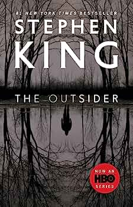

The Outsider
More Information
See this linkPlot:
"The Outsider" by Stephen King is a thrilling mystery-horror novel that begins with the shocking arrest of a respected citizen, Terry Maitland, for the brutal murder of an eleven-year-old boy named Frankie Peterson in the town of Flint City, Oklahoma.
Detective Ralph Anderson, who leads the investigation, has overwhelming evidence against Maitland, including eyewitness accounts and DNA evidence. The case seems open-and-shut, and the town is outraged by the heinous crime.
However, as the investigation progresses, contradictions arise. Terry Maitland has a solid alibi for the time of the murder, with evidence showing he was miles away. This baffling paradox creates doubt in the minds of both the detective and the public.
As the tension mounts, Detective Anderson delves deeper into the case, uncovering an unimaginable and supernatural explanation for the impossible circumstances surrounding the crime. He discovers the existence of a shape-shifting entity that feeds on human despair and grief, taking the form of those it victimizes and leaving a trail of death and devastation in its wake.
Joined by private investigator Holly Gibney, known from King's Bill Hodges Trilogy, they race against time to unravel the truth and stop the malevolent entity before it strikes again. As they close in on the creature's true nature, they face their own fears and doubts.
"The Outsider" explores themes of doubt, the duality of human nature, and the existence of malevolent forces lurking within the ordinary. King masterfully blends elements of horror and crime fiction, crafting a gripping narrative that keeps readers guessing until the heart-stopping conclusion.